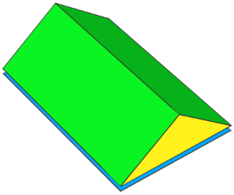
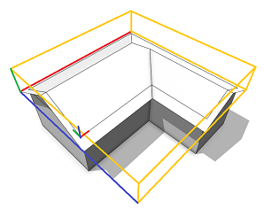
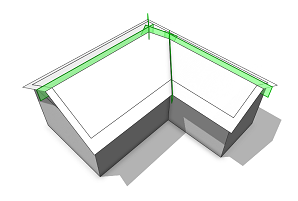
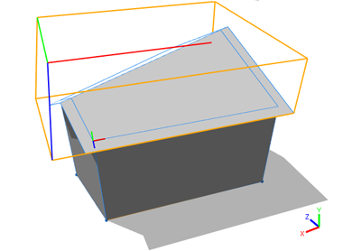
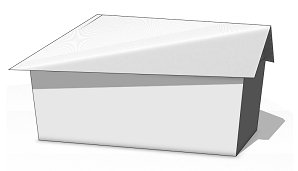

roofGable operation
valueType selector { byAngle | byHeight } Type of roof generation.
value float Angle or height of the roof-planes as specified by valueType.
angle float Angle of the roof-planes (generation byAngle).
overhangX float Overhang distance for overhangs perpendicular to ridges, measured perpendicular to the shape edges (on the roof).
overhangY float Overhang distance for overhangs in the direction of the ridges, measured perpendicular to the shape edges (on the roof).
even bool Whether to make the roof gable even or not. If true, non-planar faces originate.
index float Edge index to control the orientation of the ridge. Use with caution!
The roofGable operation builds a gable roof perpendicular to each face of the current shape's geometry. The orientation of the ridges is automatically computed (except in the indexed case). At all non-ridge (eave) edges, a plane is generated with a given angle or height wrt. the polygon plane. The planes are cut with each other to form the roof faces.
If overhangX is set, the roof faces overlap along the eave edges by this distance. Overhang distances are measured perpendicular to the edges (on the roof planes).
If overhangY is set, the roof faces overlap in the direction of the riges by this distance. Overhang distances are measured perpendicular to the shape edges (on the roof planes).
If even is set to true, the gable edges are forced to be horizontal. In this case, non-planar roof faces originate.
If index is set, the ridge is forced to be oriented in the direction of the edge index. Warning: This only works on convex shapes with a single face! The even parameter is neglected.
Scope
The scope orientation is set in the following way:
- x-axis direction is kept as much as possible (old x-axis is projected to the plane of the first face)
- y-axis along the face normal of the first face
- z-axis normal to the two above
The scope's sizes are adjusted to tighly fit the extruded geometry.
Component tags
The operation automatically applies semantic component tags to the resulting face components:
| "roof.bottom" | Blue: original face. |
| "roof.side" | Yellow: pediment faces. |
| "roof.top" | Green: roof faces. |
For more information on working with component tags, refer to:

Related
Examples
Simple Gable Roof
A basic gable roof is generated on top of an extruded L-lot.

Lot --> extrude(10) Mass
Mass --> comp(f) { top: Top | all: X }
Top --> roofGable(30, 2, 1) Roof
A gable roof with roof slope 30 degrees is built on top of an extruded L-lot. The overhangX distance is set to 2 and the overhangY distance is set to 1. Note the different overlap distances at the eaves (X) and in the direction of the ridges (Y). Also note the setting of the pivot and scope.

Roof --> set(trim.horizontal, true)
comp(f) { all : X }
After a component split, each roof face contains trim planes to cut bricks on insertion.
Even Gable Roof
This example demonstrates the difference between a standard and an even gable roof built on a trapezoid-lot.

Lot --> extrude(10) Mass
Mass --> comp(f) { top: Top | all: X }
Top --> roofGable(30, 1, 1, false) Roof
A gable roof with roof slope 30 degrees is built on top of an extruded trapezoid-lot. The overhangs (X and Y) are both set to 1. Note that the ridge is uneven.

Top --> roofGable(30, 1, 1, true) Roof
When using the above rule for theTop shape, the ridge vertices are set to the average height, making the gable roof even.
For many shapes, ridges get implicitly even and hence the even option doesn't change anything.